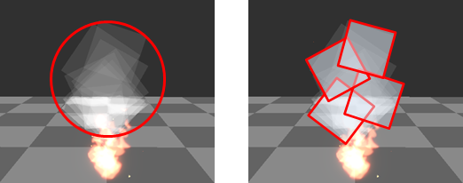

お使いのブラウザは JavaScript が使用できないため、本ドキュメントの一部機能が無効になっています。
JavaScript が無効の環境では目次を使用することができません。JavaScriptの実行が許可された状態で閲覧してください。
屈折させる場合に、不要にパーティクルを放出していませんか？ 屈折はオーバードロー(二重に屈折しない)させても無意味ですので、 適切なパーティクル数で適切な配置・面積になるようにパラメータを調整しましょう。
 画面上で屈折させたい部分に対して適切に配置できるようにする。 うまく配置できれば上記のように十数枚から数枚適度にまで最適化できます。